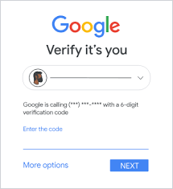
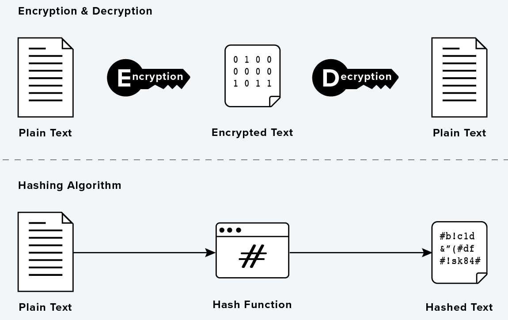

Vertrouwelijkheid
Bij het surfen op het internet is het belangrijk dat jou persoonlijke gegevens alleen tot jou beschikking behoren. Checken of deze gegevens tot de juiste persoon behoren kan door middel van authenticatie en identificatie. Bij authenticatie is het van belang dat de computer weet wie de gegevens beheert. Dit kan geverifieerd worden door middel van bijvoorbeeld een wachtwoord of een pincode. Bij identificatie wordt er uitsluitend gevraag wie jij bent, vingerafdrukken en iris scanners zijn hier voorbeelden van. Two factor authentication is een authenticatiemethode waarbij er voor meer dan een vorm van authenticatie wordt gevraagd. Denk aan dat je je wachtwoord ergens invult maar je nog een code moet invullen die naar je e-mail wordt gestuurd.
Integriteit
Stel, je ziet op magister dat je een nieuw cijfer hebt gekregen, jij kan dat cijfer niet veranderen. Jij hebt dus geen rechten als het komt tot het veranderen of aanpassen van je cijfer. Jou leraar wel. De controle over wie welke rechten bezit noemen we autorisatie of integriteit. Maar stel, dat jou leraar jou gegevens zou geven, die jou als leerling rechten geeft over de cijfers met als gevolg dat jij je cijfers dat veranderen, is de integriteit van het cijfersysteem aangetast.
Beschikbaarheid
Het is heel handig als data altijd beschikbaar is. Daarom is in het geval van verloren data een back-up handig: 'een reserve stuk data die beschikbaar is als andere data verloren is.' OneDrive, Google Drive of iCloud zijn voorbeelden van clouddiensten die jou back-ups veilig bewaren. Ondanks de vertrouwbaarheid van je back-ups en de clouddiensten, is er altijd een risico bij het bewaren van je data. Daarom word het 3-2-1-systeem voor back-ups aangeraden: Zorg er altijd voor dat je drie kopieën van je gegevens op ten minste twee verschillende manieren hebt opgeslagen, waarvan er één op een aparte locatie wordt bewaard.

Bij een wordt er gecheckt of een 'gebruiker' wel of geen toegang heeft tot de data. Hierbij worden er gegevens opgeslagen waar hackers naar kunnen loeren. Daarom wordt er bij gevoelige informatie gebruik gemaakt van encryptie. Stel, dat je een mail wil sturen naar je vriend, dan stuurt jou vriend een cryptocode (een soort sleutel) naar jou. Vanwege die cryptocode zijn jij en je vriend de enige die de mail kunnen zien.
Hashes worden gebruikt om zaken als wachtwoorden en vingerafdrukken op te slaan. Hierdoor wordt bijvoorbeeld je wachtwoord op dezelfde manier versleuteld als u het zou versleutelen. Hashen is echter niet te veranderen. Zelfs als een aanvaller een database met gehashte wachtwoorden steelt, kan hij het oorspronkelijke wachtwoord dus niet terughalen. Hoe weet de website dat u het juiste wachtwoord invoert wanneer u probeert in te loggen? Dit wordt gedaan door het wachtwoord opnieuw te hashen. Als je inlogt, wordt het wachtwoord dat je invoert gehasht. Deze hash wordt vergeleken met de hash in de database. Als de hashes hetzelfde zijn, zijn de wachtwoorden hetzelfde en kun je doorgaan. Na het hashen wordt er niets met het originele wachtwoord gedaan.